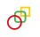

<div class="sticky">
    <div class="top-menu">
        <div class="top-menu__left-block">
            <div class="top-menu__img-block">
                
            </div>
        
            <ul class="top-menu__list" >
                <li class="top-menu__item" *ngFor="let route of routes" [class.top-menu__item--active]="currentRoute === route.path">
                    <span routerLinkActive="active" [routerLink]="[route.path]">{{ route.label }}</span>
                </li>
            </ul>
        </div>


        <div class="top-menu__right-block">
            <i class="fas fa-bars top-menu__icon"></i>
            <div class="top-menu__img-block2">
                
            </div>
        </div>

    </div>

    <div class="clock">
        <div class="clock__clock-icon">
            <i class="far fa-clock"></i>
        </div>

        <div class="clock__date">
            Nov 2021
        </div>

        <div class="clock__arrow-icon">
            <i class="fas fa-chevron-down"></i>
        </div>
    </div>
</div>
